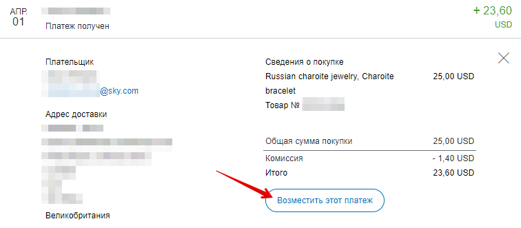
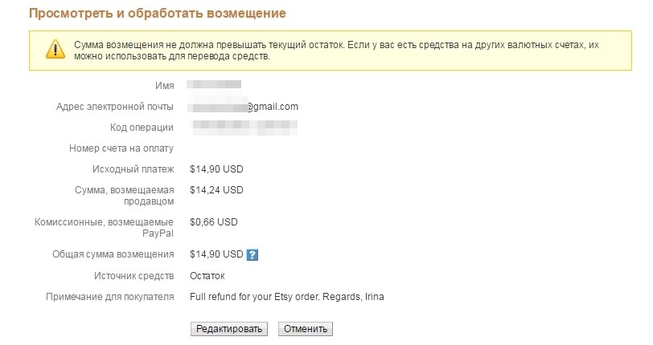
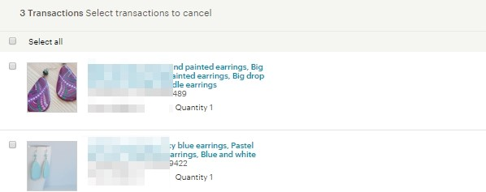
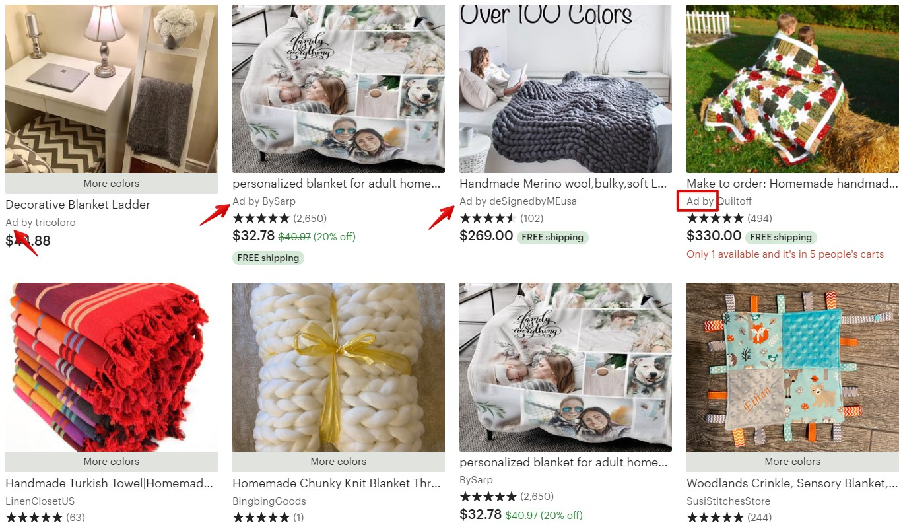
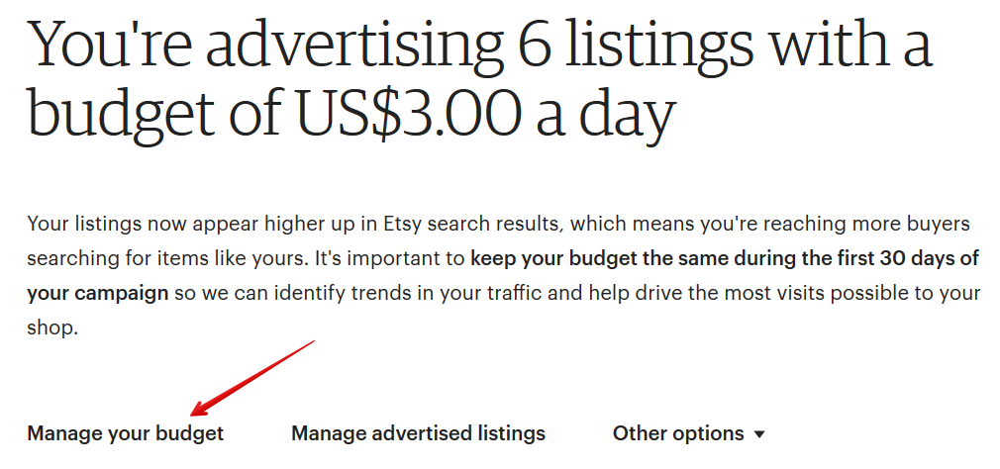
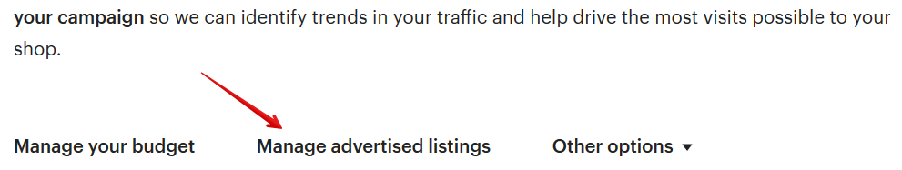
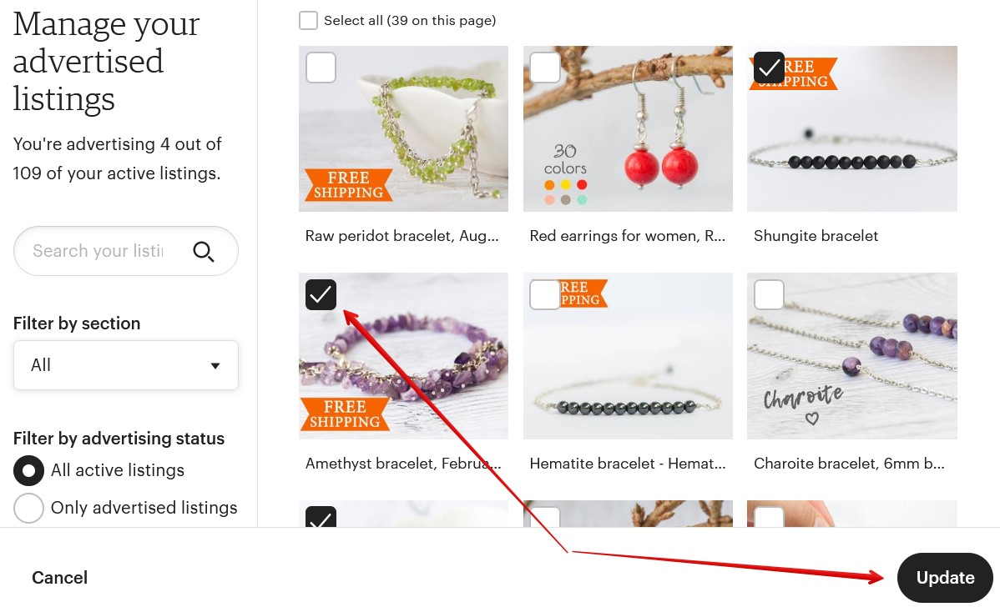

Шаг 1
На первом этапе вам нужно вернуть денежные средства на покупательский
счет. Войдите в свой аккаунт ПайПал, выберите соответствующую транзакцию
и нажмите кнопку Возместить этот платеж.
После этого откроется новая страница Отправить возмещение.
Можете изменить сумму возмещения на меньшую, если вы договорились о ча-
стичном возврате. Затем нажмите кнопку Продолжить.


Перепроверьте все данные и нажмите кнопку Отправить возмещение.
Шаг 2
Зайдите на страницу заказов Orders & Shipping, выберите нужный заказ среди
всего списка и нажмите More options — Cancel.

В новом окне откроется подтверждение отмены заказа, в котором вы должны
выбрать причину отмены и написать сообщение покупателю.
Я указываю здесь следующую информацию:
• покупатель и продавец согласны на отмену заказа
• да, покупатель оплатил заказ
• да, я отправляла сообщение покупателю
• да, я получали ответ от покупателя
В поле Message to Buyer я пишу покупателю, по какой причине отменяю заказ.
После того, как все поля заполнены, необходимо нажать кнопку Submit
Cancellation. Готово, транзакция отменена.
Листинг не будет автоматом восстановлен для повторной продажи, это нужно
сделать вручную и заплатить 20 центов.
Если вы продаете цифровой товар, то делать возврат средств или нет, решать,
разумеется, вам. Большинство продавцов не идут на уступки, а покупатели в
знак обиды иногда оставляют негативные отзывы. Я рекомендую подходить к
каждому покупателю индивидуально, ведь порой рейтинг магазина важнее, чем
несколько долларов. К тому же покупатель может отблагодарить вас в другой
раз, вернувшись за повторной покупкой.
Также имейте ввиду, в течение 48 часов после отмены заказа покупатель может
оставить на него отзыв.

Что делать, если не хватает средств для возмещения оплаты
Если в момент возмещения оплаты у вас возникла следующая ошибка «Сумма
возмещения не должна превышать текущий остаток. Если у вас есть средства
на других валютных счетах, их можно использовать для перевода средств», вам
необходимо выяснить причину:
• на вашем счете недостаточно средств (вы уже вывели деньги на свой бан-
ковский счет). Чтобы избавиться от этой причины, вам нужно пополнить
свой ПайПал счет
• в настройках счета привязано 2 валюты, доллары США и рубли, а также
установлена автоматическая конвертация (т.е. на долларовом счете нет
средств). В данном случае, чтобы избавиться от этой ошибки, нужно уда-
лить Доллары из списка валют.
Чтобы устранить вторую причину, зайдите на главную страницу своего ПайПал
аккаунта, а затем нажмите кнопку Счет в верхнем меню.
После этого нажмите кнопку троеточия в строке USD и затем Удалить валюту.

После этого вернитесь в свою транзакцию и снова нажмите на Возместить
этот платеж. А теперь проведите все манипуляции, о которых мы говорили
выше, в вопросе «Как отменить заказ?».
Возвращаются ли комиссии PayPal и Etsy за отмененный за-
каз
После отмены заказа на Etsy площадка должна вернуть вам все комиссии (эти
операции обозначаются словом credit).
В том числе Etsy должны вернуть стоимость размещения листинга (20 центов).
Хотя иногда этого не случается. В таком случае необходимо написать в техпод-
держку и уточнить, почему этого не произошло.
Возобновлять размещение листинга придется вручную за свой счет.
А вот PayPal не возвращает свои комиссии при возмещении оплаты.
Как вернуть деньги только за 1 товар из Х купленных
Если покупатель хочет отменить покупку только одного или нескольких това-
ров, в этом случае ваши действия будут идентичными тем, что описаны в во-
просе «Как отменить заказ?».
Но на последнем шаге, где вы указываете причину отмены заказа, вам нужно
выбрать галками те товары, за которые вы вернули деньги своему покупателю.

В свою очередь при возврате платежа в PayPal в строке Сумма возмещения ука-
жите то значение, о котором вы договорились с покупателем.
Остальные этапы и шаги будут такими же.
Можно ли восстановить листинг после отмены заказа
Как только вы отменили транзакцию на Etsy, вы можете восстановить листинг,
чтобы он снова был доступен для покупателей в магазине.
Для этого перейдите в Shop Manager – Listings, раздел проданных товаров Sold
Out. Найдите нужный товар и обновите его (Renew).
Как быть, если деньги ещё не пришли на PayPal, а покупатель
хочет отменить заказ
Такое возможно, если покупатель оплачивал с банковского счёта, а не с карты.
В этом случае оплата может прийти только через несколько дней.
Объясните это клиенту, а как только деньги придут – сделайте возврат.
Сможет ли покупатель цифрового товара скачать файлы по-
сле отмены заказа
После отмены заказа у покупателя пропадёт из списка купленных товаров ваш
листинг. Поэтому он не сможет скачать файл.

10. Платная реклама
Какие есть варианты платной рекламы на Etsy
Платная реклама – это хороший способ получить дополнительных посетителей
в магазин.
На Etsy вы можете рекламировать свои товары двумя способами: Etsy Ads (ре-
клама внутри площадки) и Offsite Ads (реклама на других сайтах).
Что такое Etsy Ads
Etsy Ads – это рекламный инструмент Etsy, который показывает рекламу това-
ров внутри площадки.
Внутри Etsy каждый рекламируемый листинг помечается значком Ad by слева
от названия магазина. Обычно на одной странице поиска при просмотре с ком-
пьютера размещается 3-4 ряда таких листингов: в самом начале поисковой вы-
дачи, в середине и ближе к концу.
Похожим образом реклама показывается внизу на страницах листингов.

Сколько денег уходит на рекламу Etsy Ads
Прежде чем начать рекламировать свой магазин и свои товары, вы должны
знать, что плата происходит не за размещение рекламного листинга, а за клик
по нему.
Например, ваш листинг 100 раз показали посетителям сайта, но никто на него
ни разу не кликнул – значит вам ничего не придётся платить за это.
Соответственно, платите вы только за клики по вашим объявлениям.
Цена клика определяется Etsy. Она варьируется в зависимости от рекламируе-
мого листинга, поисковой фразы и других параметров.
Как включить Etsy Ads
Для этого перейдите в раздел Marketing– Etsy Ads, укажите величину дневного
рекламного бюджета и нажмите кнопку Get started.
Сколько указать дневной бюджет для рекламы
Величина дневного бюджета – это то, сколько максимум в день Etsy сможет
потратить денег на рекламу ваших листингов.
Минимальный дневной бюджет – 1 доллар.
Как только рекламный бюджет исчерпан (благодаря кликам по рекламе потен-
циальных покупателей) – реклама перестаёт показываться до следующего дня.


Чем выше дневной бюджет, тем большую цену клика может поставить Etsy в
рекламе для ваших товаров. А чем дороже клик, тем, чаще всего, более заметно
ваше объявление среди конкурентов (оно находится выше остальных).
Если вы никогда ранее не запускали рекламу, то рекомендуем выставить днев-
ной бюджет с минимальным значением – 1 доллар.
При этом может получаться, что вы будете тратить значительно меньше. Всё
зависит от того, насколько качественно Etsy сможет показывать вашу рекламу.
И насколько охотно на неё будут кликать люди.
Изменить величину дневного бюджета можно в любой момент, если зайти в
настройку Manage your budget.
Укажите новое значение и нажмите кнопку Save changes.
Тут же Etsy напишет, какое максимальное значение вы можете указать (в дан-
ном случае, 50 долларов).


Порядок
сортировки
рекламных
листингов
(какие
выше/ниже)
Рекламные листинги, которые подходят под поисковый запрос на Etsy и у кото-
рых стоимость клика выше, находятся вверху поисковой выдачи.
Чем меньше стоимость клика, тем ниже позиции листинга относительно ре-
кламы конкурентов.
Стоимость клика Etsy рассчитывают исходя из вашего рекламного бюджета.
Как рекламировать отдельные листинги
Чтобы указать, какие листинги вы хотите рекламировать, нажмите кнопку Man-
age advertised listings.
Отметьте галочками товары, которые вы добавите в рекламу. После чего
нажмите кнопку Update.